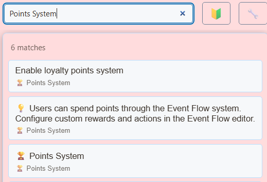

1. Включите баллы за участие


- Откройте в SSN Общие настройки и инструменты → Система баллов. Включите Включить систему баллов лояльности.
- Начните с Баллы за активность: 1 и Интервал активности (минуты): 15, затем настройте под свою трансляцию.
- Включить (Enable) !points, !leaderboard, и !rewards команды, если нужны такие ответы в чате.
- Оставьте захват в SSN и исходных чатах включённым. Попросите тестового зрителя отправить обычное сообщение, затем проверьте Управление баллами пользователей.
Баллы начисляются за захваченное участие, а не за молчаливый просмотр или каждое сообщение. После начисления зрителю нужно отправить новое подходящее сообщение за пределами интервала активности, чтобы заработать снова. Серии участия могут давать бонусы. Повторные сообщения в том же интервале не начисляют баллы повторно.
- Участвуйте Захваченная активность чата
- Зарабатывайте Интервал учитываемой активности
- Обменивайте Проверка баланса и интервала ожидания
- Отображение Подключённый оверлей наград
2. Проверяйте балансы и управляйте ими
Зрители используют !points для просмотра баланса и !leaderboard для рейтинга, если он включён. Для ответов нужен источник, умеющий отправлять сообщения обратно; если ответа нет, проверьте баланс через Управление баллами пользователей прежде чем считать, что баллы не начислялись.
!points показывает доступный баланс, заработанные баллы, расходы и резервы. !leaderboard и таблица лидеров лояльности показывают общее число заработанных баллов и сортируют по нему. Получение награды уменьшает доступный баланс; рейтинг отражает весь заработанный объём.
Используйте Управление баллами пользователей для конкретного зрителя и платформы либо Показать таблицу лидеров для общего обзора. Аккаунты определяются по имени пользователя и типу источника: одинаковые имена на Twitch и YouTube имеют отдельные балансы. Не считайте аккаунты зрителя автоматически связанными.
3. Предложите стикер-награду
- В разделе Система баллов → Стикеры-награды, включите стикеры-награды и выберите доступные наборы. Установите цену в баллах в соответствии со скоростью их начисления.
- Скопируйте Источник «Браузер» OBS ссылку в OBS и оставьте источник стикеров загруженным.
- В разделе Время и ответы в чате, задайте время показа, интервалы ожидания для зрителя и стикера и тихую паузу. При желании включите ответы на команды.
- Попросите тестового зрителя написать
!stickersдля списка включённых кодов стикеров и цен, затем!sticker rocketесли этот код включён и баллов достаточно. - Перед объявлением награды проверьте показ стикера и оставшийся баланс.
Вы одобряете награды при выборе каталога. Включённые стикеры выдаются автоматически; отдельной очереди одобрения каждой активации нет. Для своих изображений и GIF вы сами задаёте и одобряете прямой HTTPS-адрес файла. Зрители не могут отправлять произвольные изображения через команду стикеров.
При действующем интервале ожидания или отключённом оверлее запрос отклоняется без списания баллов. Если после списания показ не состоялся, SSN пытается вернуть баллы и сообщает об ошибках, требующих исправления на хосте. Подключение оверлея не доказывает, что OBS сейчас показывает его сцену.
См. Наборы стикеров и настройка для предпросмотра, собственных изображений и выбора GIF. !stickers — команда каталога стикеров; !rewards показывает общие команды наград за баллы.
4. Добавьте необязательные награды Event Flow
Для собственных действий используйте существующий редактор Event Flow и его Потратить баллы действие. Перед списанием задайте точное условие команды, укажите Сумма списанияи подключите платное действие после успешного списания. Добавьте в поток интервал ожидания.
Перед включением награды проверьте случаи с недостаточным и достаточным балансом. Собственное действие, завершившееся ошибкой после оплаты, не наследует автоматически логику доставки и возврата системы стикеров. Проверьте обработку ошибок перед привязкой платных команд к медиа или внешним действиям. См. Event Flow.
5. Сохраняйте баллы при переносе
Баллы хранятся локально в браузере или приложении. Одинаковый идентификатор сеанса на другом компьютере или в другой установке не синхронизирует балансы.
- Используйте Система баллов → Резервное копирование и восстановление → Экспорт баллов и сохраните JSON-файл.
- В новой установке сначала экспортируйте уже имеющиеся баллы, затем используйте Импорт баллов и выберите нужный режим импорта.
- Выбирайте внимательно: Объединить сохраняет большие значения баллов; Замените перезаписывает существующие данные баллов. Проверьте результат импорта, выборочно проверьте зрителей и платформы в управлении баллами пользователей и подтвердите балансы перед возобновлением наград.
Храните отдельный экспорт баллов рядом с резервной копией настроек. Сбросить все баллы очищает реестр баллов; используйте только для намеренного сброса после экспорта.
Устранение неполадок
- Баланс не меняется: проверьте захват, главный переключатель, интервал активности и аккаунт зрителя на платформе.
- История чата отключена: начисление баллов и команды баллов зависят от локальной базы сообщений. См. руководство по истории чата.
- Стикер недоступен: проверьте набор и код, достаточность баланса, интервалы ожидания и загрузку источника стикеров OBS.
- Баллы пропали после переноса: импортируйте экспорт баллов в установку, выполняющую захват; одна ссылка сеанса не является резервной копией.